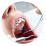
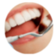
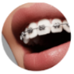
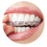

Colacação de aparelhos
O ortondologista avalia a mordida e a posição dos dentes instalando aparelhos fixos ou removiveis para alinhar corretamente os dentes

Ajuste de aparelho
Durante as consoltas, o dentista faz ajustes regulares no aparelho para garantir que os dentes se movam para a posição ideal utilizando fios e ligaturas.

Planejamento de Tratamento
O ordontologista elabora um plano personalizado, utilizando radiografias e modelos de dentes para determinar a melhor abordagem para cada paciente.

Retenção ordontôntica
Após a remoção do aparelho, o dentista cria um plano de conteção, usando retentores para manter os dentes na nova posição, e evitar recidivas.
Sobre o Dentista
Apos concluir a graduação em odontologia, ele se especializou em ordontologia, dedicando-se intensamente aos estudos e estágios práticos. Desde então, abriu seu contultório, onde introduziu tecnologias avançadas, como scanners 3D e alinhadores invisíveis, para oferecer tratamentos mais eficientes. Com uma abordagem centrada no paciente, Marcos não apenas corrige sorrisos, mas também educa sobre saúde bucal. Ele participa de congresso e grupos de pesquisa, sempre buscando as últimas tendências e técnicas para aprimorar sua prática.